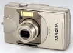
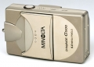
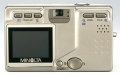

器材库 > 不可换镜头数码相机 > Dimage G500

规格总览
发布日期
2003-08-07
停产
是
影像规格
影像传感器
CCD
影像传感器尺寸
1/1.76英寸
总像素
536万
有效像素
500万
静态图像尺寸
2592×1944、2048×1536、1600×1200、640×480
静态图像格式
JPEG
画幅比
4:3
短片尺寸
320 × 240@30fps
短片格式
AVI
镜头和对焦
镜头结构
7片/6组
焦距
8mm-24mm
等效35mm画幅焦距
39mm-117mm
最大光圈
2.8-4.9
数码变焦
3倍
最近对焦距离
广角50cm,长焦80cm, 微距6cm
手动对焦
支持
曝光控制
测光模式
中央重点测光
曝光模式
P（程序自动曝光）
快门速度
1-1/2000
曝光补偿
±1.5EV以1/3EV级调整
ISO感光度
50, 100, 200, 400, 自动
白平衡
日光, 阴天, 自动, 钨丝灯, 日光灯, 预设白平衡
自拍
10秒, 2秒
闪光灯
内置闪光灯
固定
闪光模式
自动, 慢速同步, 强制闪光, 禁止闪光, 减轻红眼慢速同步
闪光涵盖范围
广角：0.5至3.5m/望远:0.5至2m
取景规格
取景器
光学取景器
LCD类型
彩色TFT LCD
LCD尺寸
1.5英寸
LCD像素
11万
文件输入/输出
内置存储容量
2MB
存储卡
MS/MS PRO记忆棒, SD/SDHC, MMC
数据接口
USB
视频/音频接口
AV 输出
支持打印协议
DPOF
电源
电池
NP-500锂离子电池
外观
颜色
金色
尺寸
94x56x29.5mm
重量
200g
xahqj2006-02-27 11:024.56 分
操作性 4.50功能性 4.50美观性 4.00趣味性 4.00耐用性 5.00性价比 5.00解像力 5.00色彩还原 4.50
cnbc2005-08-30 22:264.5 分
操作性 4.00功能性 4.50美观性 4.50趣味性 4.50耐用性 4.50性价比 4.50解像力 5.00色彩还原 4.50
ccdandzj2005-05-07 14:434.81 分
操作性 5.00功能性 4.50美观性 4.50趣味性 4.50耐用性 5.00性价比 5.00解像力 5.00色彩还原 5.00
SEPIA2004-12-05 22:024.75 分
操作性 4.50功能性 4.50美观性 5.00趣味性 4.50耐用性 4.50性价比 5.00解像力 5.00色彩还原 5.00
产品图 / 样片
Dimage G500

Dimage G500

Dimage G500
评测 / 相关文章
该产品暂无存档的评测文章